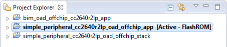

Off-Chip OAD¶
This section describes the TI Off-chip OAD implementation. Off-chip OAD utilizes an external memory component (Flash) to store the new image during download and image selection/update.
The following procedures are unique to Off-chip OAD:
For information about the OAD profile and image header, please see OAD Concept Overview.
For information about the TI OAD Sample Applications that showcase On-Chip OAD, see OAD Projects Overview..
Supported Stack Image Types¶
Off-chip OAD supports the split image build configuration. Stack library image types can be upgraded through Off-chip OAD but that is outside the scope of this document.
Off-chip OAD supports Application Only, Stack Only, or App + Stack Merged OADs. This means that the user can update both the application and stack during the same OAD session.
Constraints and Requirements for Off-chip OAD¶
In order to perform an Off-chip OAD the target system must contain have:
- An off-chip flash storage of at least 124kB and space for storing external flash image header block is required for a full flash update. One flash page (4Kb) is occupied by BIM. A serial connection (SPI) is used to communicate with the off-chip flash component.
- Free GPIO pins to interface to the external memory (i.e. 4 wires for SPI)
- Enough free code space to reserve the entire contents of pg 31 (4kB) for BIM
- The OAD Image to be downloaded to the off-chip flash memory can be an application image, a stack image, a combined application plus stack, an image intended for the upgrade of a network processor, or any type of image as far as it is supposed to eventually replace any part of the on-chip 120kB area between the first page and the penultimate page. More than one image can be downloaded before the system reset followed by BIM’s copying the downloaded images from the off-chip flash memory to the on-chip flash memory.
Off-chip OAD Memory layout¶
The memory maps for both internal and external flash are detailed below.
Figure 84. Off-Chip OAD Memory Layout
Off-chip OAD applications use the both internal flash memory and an off-chip flash memory device. The internal flash memory contains the Interrupt Vectors (part of the User Application space), the Application where OAD Profile is embedded, the BLE stack image, the NV Storage Area, the BIM and the CCFG.
The off-chip flash memory on the CC2640R2 Launchpad contains up to 3 OAD Images and up to 3
metadata vectors corresponding to the OAD Images. The memory map layout of the
external flash part is defined in ext_flash_layout.h. The size of each
OAD Image placeholder is 128kB. The memory partition of the application for
Off-chip OAD is depicted in Figure 84..
Each OAD image, either App only or App+Stack, must support OAD Profile so that
further OAD is enabled after it is downloaded to the off-chip memory, copied to
the on-chip memory, and executed.
The sectors in Figure 84. in red are designed to be permanently resident on the device. The BIM and CCFG are not intended to be upgraded via OAD. The OAD design was selected this way so that a failure during the OAD process does not yield a bricked device.
External Flash Metadata¶
The external flash metadata is an array of structures containing OAD downloadable information. Each structure will be stored at the start of a separate flash page to aid easy modification of an individual structure while retaining rest of the structures intact. The metadata header fields are identical to the image header with the following modifications:.
- OAD Image Identification Value is a different unique number than in the image header. BIM uses this number to find the flash page containing external flash metadata. This document will refer to this value as External Flash Image Identification Value
- Instead of Boundary Information and Contiguous Image information, the header length field is followed by the to the flash address where the actual OAD image is stored on the external flash. Note: The OAD client will calculate the storage address, by reading valid external image metadata from the image metadata array, and finding the next available storage area.
After storing the image on the external flash, the OAD application will set the Image Copy status to 0xFE if it needs to be copied to the on-chip flash. To identify the latest image to be downloaded on the on-chip flash, BIM will read the ‘Image copy status’ field of the metadata array. There should be only one image with a value of 0xFE as BIM will copy the first image with metadata status to be copied. The BIM will modify the state to 0xFC when it is done copying image to on-chip flash.
External Flash Metadata¶
The external flash metadata pages and the image storage will grow in opposite directions. To make the implementation more generic, each external flash metadata will store the 8 byte External Flash Image Identification Value at the beginning of the external flash metadata. If a BLE factory image is stored at first flash pages then, metadata storage would start at flash page next to the end of the image. The external flash metadata’ storage location are not fixed and BIM can find their location by reading the first eight bytes of every external flash page. For efficient BIM implementation, the OAD external flash metadata will be stored from flash page 0 onwards.
It would be application’s responsibility to find the available free storage for storing the newly downloaded image on the external flash. The image metadata area will contain the image header information for the stored OAD images with the modifications specified above.
Factory programmed BLE and other images will have OAD download capability but will not be replaceable by over the air upgrade. The user application can choose to switch to factory image. The length and location of the user defined area is configurable and will have the image metadata header like any other image.
The OAD target application gathers part of the external flash metadata information from image header and stores on the available metadata page except for the ‘CRC Status’ byte. The ‘CRC Status’ byte is updated at the last when all the image payload is stored on the flash and calculated CRC matched with the one embedded in the image header.
The rest of the available space can be used in two possible ways:
- By allocating the dedicated memory area between OAD images types
- Using area to store multiple images of variable length.
The second approach is more efficient in term of memory space usage. It requires the OAD client application to read the metadata information to figure out the length and location of available memory space. The number of co-existing OAD images will depend on individual image size and available area on the external flash.
If there is no space left for the new image, OAD client/target application can re-use the oldest image storage area to replace with new one. This can result in fragmentation. This requires time stamping the images, which can be done by simply by incorporating the counter in external flash metadata header and incrementing it every time the image is downloaded.
If application stores multiple images on the external flash, it can choose to enable a specific one of them by issuing the ‘enable’ command at OAD control point of by specifying the respective parameters (‘Image type’, ‘image number’, etc.) it wishes to activate. The active application can read the existing metadata to identify the correct image by reading the Image ID, and updating the status to 0xFE.
The application can reuse the used metadata and actual image storage flash pages by erasing it to support downloading and storage of multiple images without having a dedicated storage area for each image type.
BIM for Off-chip OAD¶
Warning
The BIM will link the resident CCFG sector. Furthermore,
this is a custom CCFG, with the IMAGE_VALID_CONF field set to
0x1F000. This means that the boot ROM of the device will automatically
execute BIM code instead of application code at startup. BIM
will handle starting the application. OAD applications will not need to
include a CCFG. This is a feature of CC2640R2F, and not compatible
with CC2650 devices.
The OAD solution requires that permanently resident boot code, the BIM, exists in order to provide a fail-safe mechanism for determining whether to run the existing application image or to copy a new image or images from off-chip flash to internal flash (code) memory. It is assumed that a valid image exists either in off-chip flash ready to be copied or already placed in on-chip flash at any given time. Given this assumption, the initial image placed in internal flash which does not exist in external flash will have invalid external image metadata, and so the BIM will choose to jump to the existing image’s entry point.
At startup, BIM finds the location of image metadata header flash page by iterating through each page of external flash starting from page 0, by reading the first 8 bytes to find the valid External Flash Image Identification value. After locating the image metadata information, it verifies the compatibility of BIM and metadata versions. Then it checks if the ‘Image copy status’ is set to be copied to the on-chip flash(0xFE) and has a valid CRC (CRC status=0xFE). If it is, copies the image to on-chip flash, as per the image copy procedure. If any other status value is found the image will not be verified or copied to internal flash.
If it finds status ‘CRC not calculated’(CRC Status = 0xFF), it calculates the CRC and updates the CRC status byte accordingly. If it finds the valid CRC status, it copies the image to on-chip flash starting at the address pointed by ‘Start Address’ in image header of the image payload. On finding the invalid CRC it moves on to read the next image metadata. If BIM reaches the end of metadata without finding a valid image, then it will try to find an on-chip image and execute it. BIM will put the device to low power mode if it fails to find a valid application image.
An image is considered bad/invalid if it’s calculated CRC32 does not match with the image’s CRC bytes embedded in the image header.
Figure 85. Functional Overview of Off-chip BIM
Finding the last flash page containing flash metadata¶
In the normal condition when there are empty flash pages, the OAD client application will write the image metadata to the very first available flash page sequentially starting from flash page 0 as shown in the external flash layout. It is recommended that the application leaves least one empty flash page between metadata pages and stored image at any point in time. If the application encounters such a condition that no empty flash page is left in between the stored image pages and image metadata page, it should reuse the flash metadata pages by erasing one metadata page at a time and writing the new one. If all metadata pages are used or there would only one be empty page between the metadata pages and the image payload then the older metadata pages should be erased and reused.
Forced Image Copy¶
BIM will implement this optional feature based on the hardware capability, to forcibly copy a designated image from external flash to on-chip flash(using button combinations). It would help recover the target in case an invalid image has been copied on onchip flash which left the device unresponsive. This feature is disabled by default as this can pose a security risk.
Out of the Box Demo (Off-Chip App Only OAD)¶
The SimpleLink CC2640R2 SDK includes demo projects that are setup to use OAD in advance. These build configurations may be flashed onto the device out of the box. All out of the box demos use BTool as the OAD Downloader. Please see OAD Topology Overview for more information. Ensure that BTool is setup correctly first. See BTool Setup for steps on how to do so. The steps listed below assume that a CC2640R2 Launchpad is being used. Additional steps may be required for custom hardware.
Furthermore, the steps in this section are referring to the OAD Target device, the images referenced below should be flashed onto that device.
Using CCS¶
Warning
If both the OAD Target and the OAD Downloader are connected at the same time, CCS may load the image to the wrong device. This is because CCS will select the first XDS110 it finds. This behavior can be avoided by unplugging the OAD Target device, or by setting a multi emulator debug session using CCS. See the wiki Debug with Multiple Emulators for more information.
The steps below will describe how to run the out of the box demo for OAD on CCS.
Import the bim_oad_offchip, stack, and app projects into the workspace. This can be done by importing the
simple_peripheral_cc2640r2lp_oad_offchip_appproject. It will automatically pull in the other projects it needs.Figure 86. Offchip OAD CCS Workspace
Build and load the BIM project onto the CC2640R2 Launchpad
Build and load the
simple_peripheral_cc2640r2lp_stack_oad_offchipproject onto the CC2640R2 LaunchpadBuild the and load the
simple_peripheral_cc2640r2lp_app_oad_offchipproject- Note that a special post build step will run and generate a new app image
file called
simple_peripheral_cc2640r2lp_app_oad_offchip.bin. This is the file to be provided to BTool and sent over the air.
- Note that a special post build step will run and generate a new app image
file called
You should now be able to observe that the device is advertising using BTool.
- See BTool OAD Verify Advertising for steps.
Note: The device will not advertise after a power cycle because the image as loaded by CCS does not contain valid image header information. In order to see the device after a power cycle. Use Smart RF Flash Programmer 2 to load the *_oad_offchip.hex file.
Make your application level changes that are intended for OAD update. Follow steps in Changing Application Data to Verify an OAD for a trivial way to change app to verify the OAD. Build the application with changes.
Use BTool to OAD your modified application file following the steps detailed in BTool OAD Procedure
- Make sure you are using the *_oad_offchip.bin file with BTool as this file contains the metadata.
Attention
After a successful OAD, you may need to re-start your CC2640R2F in order for it to advertise again. This is because the XDS110 driver may be still attached from previous debug sessions.
Using IAR¶
The steps below will describe how to run the out of the box demo for OAD on IAR.
Open the
simple_peripheral_oad_offchipworkspace from the simple_peripheral_oad_offchip folder within the BLE-stack examples. This will import the BIM, stack, and application projects.- Build and load the BIM project
- Build and load the stack project.
Build and load the
simple_peripheral_oadapplication project.You should now be able to observe that the device is advertising via BTool.
- See BTool OAD Verify Advertising for steps.
Note: The device will not advertise after a power cycle because the image as loaded by IAR does not contain valid image header information. In order to see the device after a power cycle. Use Smart RF Flash Programmer 2 to load the *_oad_offchip.hex file.
Make your application level changes that are intended for OAD update. Follow steps in Changing Application Data to Verify an OAD for a trivial way to change app to verify the OAD. Build the application with changes.
Use BTool to OAD your modified application file following the steps detailed in BTool OAD Procedure
- Make sure you are using the *_oad.bin file with BTool as this file contains the metadata. By default these images can be found at:
Attention
After a successful OAD, you may need to re-start your CC2640R2F in order for it to advertise again. This is because the XDS110 driver may be still attached from previous debug sessions.
Add Off-chip OAD to an existing project¶
Note
All the following changes get applied to the application side. Stack side should remain untouched for all OAD configurations. For more information see Stack Side Changes for OAD Project.
Use
bim_oad_offchipproject, as is. No change is required.Add OAD profile code to the application project:
- The required files can be found in
\source\ti\blestack\profiles\oad\cc26xxcrc32.ccrc32.hoad_image_header_app.coad_image_header.hoad.coad.h
- The required files can be found in
Add External Flash support files to application project
- The off-chip OAD projects rely on the ExtFlash module from
the middleware folder
\source\ti\mw\extflash. Add these files to the application project.ExtFlash.cExtFlash.h
- Add the following files from
\source\ti\blestack\common\cc26xx\flash_interface\externalflash_interface_ext_rtos.cflash_interface.h
- The off-chip OAD projects rely on the ExtFlash module from
the middleware folder
Add the necessary include paths to the project:
- The OAD profile code can be found at
\source\ti\blestack\profiles\oad\cc26xx
- The OAD profile code can be found at
Use the proper off-chip OAD linker file and configure it properly.
- IAR projects should use:
cc26xx_app_oad.icffor App Only, App + Stack
- CCS projects should use:
cc26xx_app_oad.cmdfor App Only, App + Stack, Library
For information on how to modify an existing linker command file for OAD see Generating Linker Command File for OAD Off-chip.
Add the following preprocessor defines to your application:
- HAL_IMAGE_E
Add necessary code to your high level application file to include OAD.
Add the following defines to your application file (i.e. simple_peripheral)
#include "oad_target.h" #include "oad.h" // ... #define OAD_PACKET_SIZE ((OAD_BLOCK_SIZE) + 2) // ... #define SBP_QUEUE_PING_EVT Event_Id_02 #define SBP_ALL_EVENTS (SBP_ICALL_EVT | \ SBP_QUEUE_EVT | \ SBP_PERIODIC_EVT | \ SBP_CONN_EVT_END_EVT | \ SBP_QUEUE_PING_EVT)
Add the following TI-RTOS Queue structures in your application:
// Event data from OAD profile. static Queue_Struct oadQ; static Queue_Handle hOadQ;
Add a callback to your application
void SimpleBLEPeripheral_processOadWriteCB(uint8_t event, uint16_t connHandle, uint8_t *pData);\ // ... static oadTargetCBs_t simpleBLEPeripheral_oadCBs = { SimpleBLEPeripheral_processOadWriteCB // Write Callback. };
Register the OAD service, initialize Queues.
VOID OAD_addService(); // OAD Profile OAD_register((oadTargetCBs_t *)&simpleBLEPeripheral_oadCBs); hOadQ = Util_constructQueue(&oadQ);
Add the OAD Queue processing code to your application
if (events & SBP_QUEUE_PING_EVT) { while (!Queue_empty(hOadQ)) { oadTargetWrite_t *oadWriteEvt = Queue_get(hOadQ); // Identify new image. if (oadWriteEvt->event == OAD_WRITE_IDENTIFY_REQ) { OAD_imgIdentifyWrite(oadWriteEvt->connHandle, oadWriteEvt->pData); } // Write a next block request. else if (oadWriteEvt->event == OAD_WRITE_BLOCK_REQ) { OAD_imgBlockWrite(oadWriteEvt->connHandle, oadWriteEvt->pData); } // Free buffer. ICall_free(oadWriteEvt); } }
Add an application layer OAD callback
void SimpleBLEPeripheral_processOadWriteCB(uint8_t event, uint16_t connHandle, uint8_t *pData) { oadTargetWrite_t *oadWriteEvt = ICall_malloc( sizeof(oadTargetWrite_t) + \ sizeof(uint8_t) * OAD_PACKET_SIZE); if ( oadWriteEvt != NULL ) { oadWriteEvt->event = event; oadWriteEvt->connHandle = connHandle; oadWriteEvt->pData = (uint8_t *)(&oadWriteEvt->pData + 1); memcpy(oadWriteEvt->pData, pData, OAD_PACKET_SIZE); Queue_put(hOadQ, (Queue_Elem *)oadWriteEvt); // Post the application's event. For OAD, no event flag is used. Event_post(syncEvent, SBP_QUEUE_PING_EVT); } }
Add the necessary arguments to your configuro script to relocate your app’s reset vector address.
- Add
OAD_IMG_E=1to your –cfgArgs. See Using a custom reset vector address for your application for more information.
- Add
[Optional] On custom hardware, you may need to change the pinout of the external flash part. This can be done in two steps:
First, change the application layer code.
The application interfaces to the external SPI flash via
ExtFlash.cBy default, the ExtFlash module uses
Board_SPI0, this can be changed to Board_SPI0/* Attempt to open SPI. */ spiHandle = SPI_open(Board_SPI0, &spiParams);
The pins used by the
Board_SPIXgroup can be set in the board file, i.e. CC2640R2_LAUNCHXL.c.mosiPin = CC2640R2_LAUNCHXL_SPI1_MOSI, .misoPin = CC2640R2_LAUNCHXL_SPI1_MISO, .clkPin = CC2640R2_LAUNCHXL_SPI1_CLK, .csnPin = CC2640R2_LAUNCHXL_SPI1_CSN
The defines above can be set in CC2640R2_LAUNCHXL.h
Second, change the pins that the BIM uses to access the SPI flash. This can be done in the
bim_oad_offchipproject. Since BIM is a bare metal program (no-RTOS). It doesn’t use the TI-RTOS SPI driver like the application does. BIM SPI pins are set in\examples\rtos\CC2640R2_LAUNCHXL\blestack\bim_oad_offchip\src\bsp.h// Board external flash defines #define BSP_IOID_FLASH_CS IOID_20 #define BSP_SPI_MOSI IOID_9 #define BSP_SPI_MISO IOID_8 #define BSP_SPI_CLK_FLASH IOID_10
[Optional] For App+Stack or Library OAD Images, trim SNV/Unused Space
Library and App+Stack can generate large OAD images especially if the end application utilizes SNV. (App + Stack will always be large)
SNV can be preserved on the OAD Target device by applying the ‘-r’ command to the OAD Image Tool. The ‘-r’ command will limit the output image to within the range specified. Page alignment must still be preserved, so some 0xFFs may be kept in the image.
For example, to preserve page 31, or a 1 page SNV: the
-r :1e000command can be appended to the post build step:"$TOOLS_BLE$\oad\oad_image_tool.exe" "$PROJ_DIR$\FlashROM_OAD_Offchip\Exe\simple_peripheral_cc2640r2lp_app.hex" "$PROJ_DIR$\..\stack\FlashROM\Exe\simple_peripheral_cc2640r2lp_stack.hex" -t offchip -i app --imgVer 0 -ob "$PROJ_DIR$\FlashROM_OAD_Offchip\Exe\simple_peripheral_cc2640r2lp_app_oad.bin" -m 0x0000 -r :0x1e000
The result will be am OAD image file that will not overwrite a target’s 31st page (if used for SNV, adjust as necessary for 2 SNV pages)
Lastly, for Library builds, there will be 0xFFs between the end of the Application + Stack merged section and the SNV. If SNV is being preserved then it is safe to also trim the OAD image to the nearest page.
For example, if a Library OAD image is produced, only takes up the first 15 pages and the SNV does not need to preserved, then append
-r :0x0F000to the post-build step:"$TOOLS_BLE$\oad\oad_image_tool.exe" "$PROJ_DIR$\FlashROM_StackLibrary_OAD_Offchip\Exe\hid_adv_remote_cc2640r2rc_app.hex" -t offchip -i app --imgVer 0 -ob "$PROJ_DIR$\FlashROM_StackLibrary_OAD_Offchip\Exe\hid_adv_remote_cc2640r2rc_app.bin" -m 0x0000 -r :0xF000